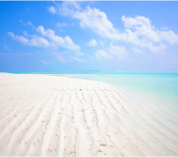
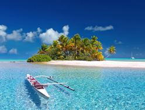
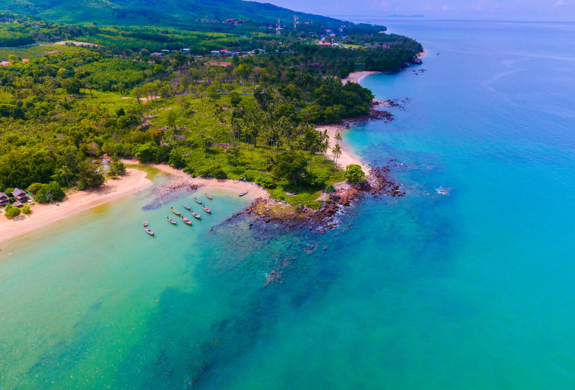

園區地圖
{{boxContent[4]}}
{{boxContent[5]}}
{{boxContent[6]}}
-

星月沙灘
-

日月溪
-
登山步道





島嶼簡介


明島是位於國際換日線上的兩座小島嶼，因島嶼間的時差關係，形成了“日月同輝” 的獨特景象。是日與月結合的島嶼，故取名為「明島」。
明島特色
晝夜奇觀 X 自然寶藏
A Whole World On A Single Island.
明島發展
日月同輝 X 永續經營
“I read; I travel; I become.; I alive” — Sunoom
明島因其特性，我們打造成適合海陸雙棲遊玩 探險的觀光小島，同時我們也注重保護自然生態，不過度開發是我們的宗旨，平衡環境與發展，實現永續營。
聯絡資訊
-
{{office_list[0][1]}}
聯絡人：{{office_list[0][2]}}
電話：{{office_list[0][3]}}
傳真：{{office_list[0][4]}}
位置：{{office_list[0][5]}}
Email：{{office_list[0][6]}}
-
{{office_list[1][1]}}
聯絡人：{{office_list[1][2]}}
電話：{{office_list[1][3]}}
傳真：{{office_list[1][4]}}
位置：{{office_list[1][5]}}
Email：{{office_list[1][6]}}
-
{{office_list[2][1]}}
聯絡人：{{office_list[2][2]}}
電話：{{office_list[2][3]}}
傳真：{{office_list[2][4]}}
位置：{{office_list[2][5]}}
Email：{{office_list[2][6]}}
交通資訊
-
船班時刻
航行時間約40分鐘
-
登島
8:20
9:20
10:20
-
離島
14:20
15:20
16:20
-
-
航班時刻
航行時間約20分鐘
-
起飛
8:20
9:20
10:20
-
降落
14:20
15:20
16:20
-
FAQ
-
{{faq[1]}}
{{faq[2]}}